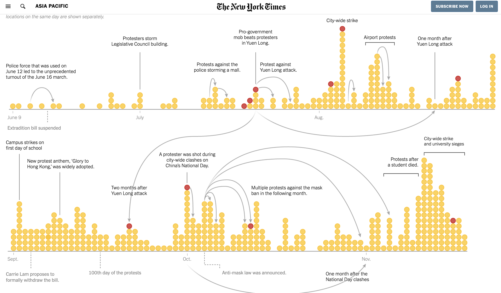
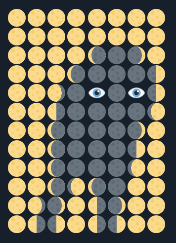
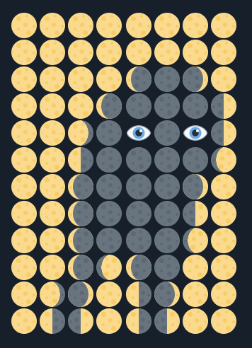
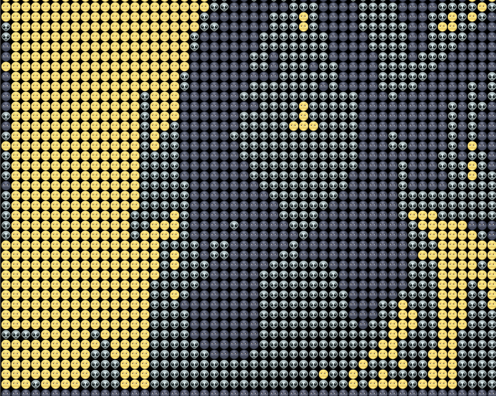

The Sound of Communications
This is a project collaborating with Zeyao, working on the data the New York Times collected on HK Protest:

As a "Taiwan Chinese", my identy seemed never to be freed from political topics. My background is, as what I termed it, a multi-chinese-culture. I grew up in Shanghai, my mom is from Beijing, and I am a Taiwan Passport holder. I found myself uncomfortable to either call myself a Taiwanese or Chinese infront of a crowd. I always call myself as Chinese Taipei.
When the HK just started, I see how a tiny snow ball slowly became a large one that could be dangerous.
Video on P5: Text and Emoji
The first thing came to my mind when I thought about pixels, were the 'text drawings' sometimes you can see on the twitter timeline that might look something like this:

I want to play with the only the negative/positive space of each letter or symbol to create shape and line out of it without change the oppacity/brightness of the elements. To do this, I will need to get the brightness instead of the color for each pixel, and assign a certain range to different text by using if statement.
I made the negative space black, so that means the the darker pixels will be assigned to the symbols that has the least possitive spaces. And I have the following statement:
let brit = int(brightness(img.get(x, y)));
if (brit >= 0 && brit <= 10) {
updateText('.', x, y);
} else if (brit >= 11 && brit <= 20) {
updateText('*', x, y);
} else if (brit >= 21 && brit <= 30) {
updateText('!', x, y);
} else if (brit >= 31 && brit <= 40) {
updateText('/', x, y);
} else if (brit >= 41 && brit <= 50) {
updateText('+', x, y);
} else if (brit >= 51 && brit <= 60) {
updateText('=', x, y);
} else if (brit >= 61 && brit <= 70) {
updateText('o', x, y);
} else if (brit >= 71 && brit <= 90) {
updateText('O', x, y);
} else if (brit >= 91 && brit <= 100) {
updateText('@', x, y);
}
I'm pretty satisfied with the look already, but I still sort of wanted to play with color that is relevant to the color of the capture. I first tested out the range for red (it should be 255, 0, 0, 1 for rgba, but I know the lightness will affect the color). I called out the values of each pixel and give it the range of R > 200, G < 50, B < 50, A > 0. However, eventhough I was wearing a red hoodie, it still didn't get any red. So I made the range even wider:
let c = img.get(x, y);
if (c[0] >= 170 &&
c[1] <= 100 &&
c[2] <= 100 &&
c[3] >= 0) {
fill('red');
} else {
fill('white');
};
And this is what I got:
I love to zooming in to the symbol pixels to see them wiggling. Also like this visual esthic a lot and it's pretty accurate:

And I was having fun playing with this by creating a slider that you can change the colors: Code
After played with pure text, talking about my initial insipiration--visuals done by text, recently, people were also using emojis as pixels.
 

Seeing the potential of this becoming a video filter, I chose the two emoji that came to my mind straight when I planned to make this: üåö and üåù, which are perfect for bright and dark pixels. Then I tested out with some emojis that will give a good transition inbetween the two (that also carries a similar 'meme(?) vibe') and the alien work out the best! It is pretty interesting that from far the color scheme actually looks like a decent (well, it should be) color choice, but when zoomed in, you will see faces...
